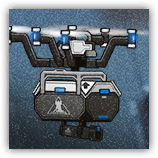

迷迭香的无人机 Rosmontis's Drone
远程 物理；精英 构装（无人机）

|
 |
迷迭香的无人机。罗德岛工程部的尖端设计，为本次矢量突破训练特别定制的无人机。迷迭香很喜欢它的颜色。 刻骨铭心。回忆转瞬即逝，却代表着我们生命的无穷可能性。 |
矢量无人机丨Vector Drone
中型构装（无人机），无阵营
| AC 17 | 先攻 +5（15） |
| HP 105（10d8+60） | |
| 速度 0 尺，30尺飞行 | |
| 调整 | 豁免 | 调整 | 豁免 | 调整 | 豁免 | |||||||||
|---|---|---|---|---|---|---|---|---|---|---|---|---|---|---|
| 力量 | 14 | +2 | +2 | 敏捷 | 20 | +5 | +5 | 体质 | 22 | +6 | +6 | |||
| 智力 | 0 | -5 | -5 | 感知 | 10 | +0 | +0 | 魅力 | 0 | -5 | -5 |
| 技能 察觉+8，特技+9 |
| 免疫 毒素，心灵；魅惑，恐慌，力竭，中毒，震慑，麻痹 |
| 感官 黑暗视觉120尺；被动察觉18 |
| 语言 无 |
| CR 9（XP 5,000；PB+4） |
特质 Traits
物件本质 Object Nature。无人机忽略要求其进行智力、感知、魅力豁免检定的效应。使用精金武器或弹药对其的攻击若命中则视为造成重击。
力场掩护 Force Field Cover。矢量无人机被力场保护，使得其在面对攻击和效应时具有全身掩护。如果矢量无人机遭法术解除魔法效应影响，此效应会压制1分钟。此外，如果生物拥有来自矢量战术装备的临时生命值，则该生物以及其15尺内的盟友也可以忽略掩护影响到矢量无人机。
装备增幅 Equip. Enhancement。矢量无人机在被击毁时，为击毁自己的生物赋予100点临时生命值。此临时生命值存在期间，任何对该生物发动的攻击检定具有劣势，该生物进行的豁免检定具有优势。
动作 Actions
多重攻击 Tactical Cover。矢量无人机发动两次震慑击攻击。
震慑击 Stunning Strike。远程攻击检定：+9，射程60尺。命中：14（4d6）穿刺伤害，且目标或其5尺内的另一生物受到7（2d6）闪电伤害。重击：目标陷入震慑直到其回合结束。